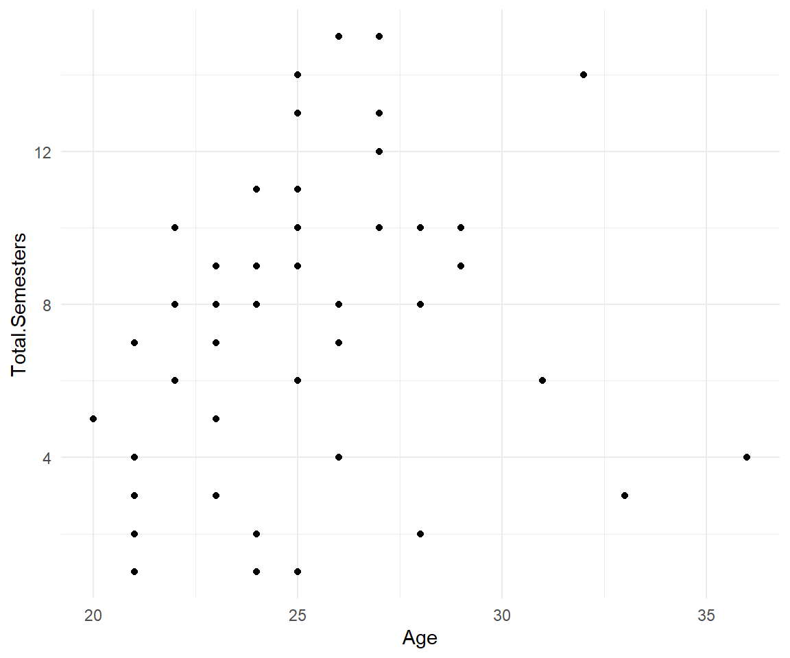
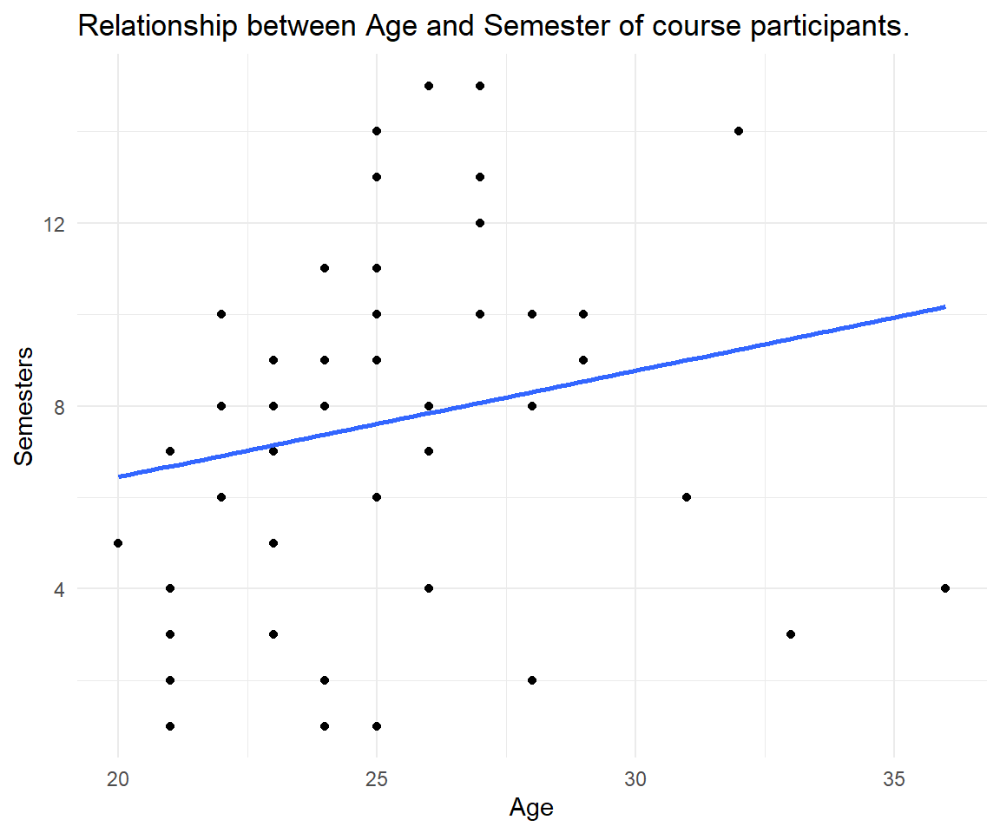

Intro to Tidyverse
The tidyverse is a collection of R packages for data science that share a common philosophy and grammar.1 Once the package tidyverse is installed on your system via the command install.packages(tidyverse), it is loaded via library(tidyverse) in a session. Then you have access to all components like readr (for reading data), dplyr (for manipulating data), ggplot2 (for data visualization) and many more.
Data with readr
The readr package reads data into what is called a tibble.
A tibble is similar to a dataframe. When you print a tibble, it only shows the first ten rows and all the columns that fit on one screen. It also prints an abbreviated description of the column type, and uses font styles and color for highlighting. So to say, the default behavior is excellent.
# load the entire tidyverse
library(tidyverse)
# read_csv is a tidyverse (readr) function
coursedata <- read_csv("https://raw.githubusercontent.com/MarcoKuehne/marcokuehne.github.io/main/data/Course/GF_2022_57.csv")
# print a tibble
coursedata
#> # A tibble: 57 × 8
#> Academic.level Gender Age Total.Semesters Background.in.Statistics
#> <chr> <chr> <dbl> <dbl> <dbl>
#> 1 Bachelor Female 23 8 2
#> 2 Bachelor Female 22 10 4
#> 3 Master Male 23 9 4
#> 4 Master Male 24 2 3
#> 5 Master Male 27 10 2
#> 6 Master Male 23 7 3
#> 7 Bachelor Female 20 5 2
#> 8 Bachelor Female 22 8 2
#> 9 Master Male 27 13 4
#> 10 Master Female 22 10 4
#> # ℹ 47 more rows
#> # ℹ 3 more variables: Background.in.R <dbl>,
#> # Background.in.Academic.Writing <dbl>, Expectations <chr>When you use the base R read.csv() instead, it reads data into a dataframe. When you print the dataframe, it displays all data at once (output not shown in the book). In order to show first entries, another command like head() is necessary.
# use base R utilities
coursedata <- read.csv("https://raw.githubusercontent.com/MarcoKuehne/marcokuehne.github.io/main/data/Course/GF_2022_57.csv")
# print a dataframe (all data)
coursedata
# print first 6 observations of the data
head(coursedata)Reading
There are three key differences between tibbles and data frames: printing, subsetting, and recycling rules. Read more about those difference in the vignette of tibble.
Verbs of dplyr
The first verbs you learn for data inspection are glimpse(), select(), arrange() and filter(). Those are classic operators that you also find in Microsoft Excel (via clicking the correct menu options).
Glimpse
glimpse() tells the number of rows and columns, the first variable names, the class of the variables, i.e. chr for character (like text) or int for integer (like whole numbers). Another kind of variables are dbl, double, short for double-precision floating-point format.
This data set contains 57 rows (observations) and 9 columns (variables). glimpse() also shows the first observations for each variable.
glimpse(coursedata)
#> Rows: 57
#> Columns: 8
#> $ Academic.level <chr> "Bachelor", "Bachelor", "Master", "Mast…
#> $ Gender <chr> "Female", "Female", "Male", "Male", "Ma…
#> $ Age <dbl> 23, 22, 23, 24, 27, 23, 20, 22, 27, 22,…
#> $ Total.Semesters <dbl> 8, 10, 9, 2, 10, 7, 5, 8, 13, 10, 8, 8,…
#> $ Background.in.Statistics <dbl> 2, 4, 4, 3, 2, 3, 2, 2, 4, 4, 2, 2, 2, …
#> $ Background.in.R <dbl> 2, 3, 2, 1, 1, 1, 3, 1, 4, 4, 1, 2, 2, …
#> $ Background.in.Academic.Writing <dbl> 2, 2, 4, 3, 4, 2, 3, 2, 4, 3, 1, 2, 3, …
#> $ Expectations <chr> "I want to be efficient in my knowledge…Select
Columns are selected by name or column index. Thus, the outcome of select(coursedata, Gender, Age) and select(coursedata, 2, 3) is identical.
select(coursedata, Gender, Age)
#> # A tibble: 57 × 2
#> Gender Age
#> <chr> <dbl>
#> 1 Female 23
#> 2 Female 22
#> 3 Male 23
#> 4 Male 24
#> 5 Male 27
#> 6 Male 23
#> 7 Female 20
#> 8 Female 22
#> 9 Male 27
#> 10 Female 22
#> # ℹ 47 more rowsWe can use a minus - to get rid of a column and leave the rest of the columns:
select(coursedata, -Total.Semesters, -Background.in.Statistics,
-Background.in.R, -Background.in.Academic.Writing) Arrange
Often we are interested in the maximum or minimum age, thus arrange() a numerical value.
arrange(coursedata, Age) # from low to high Age
#> # A tibble: 57 × 8
#> Academic.level Gender Age Total.Semesters Background.in.Statistics
#> <chr> <chr> <dbl> <dbl> <dbl>
#> 1 Bachelor Female 20 5 2
#> 2 Master Female 21 7 2
#> 3 Bachelor Male 21 2 3
#> 4 Bachelor Female 21 4 2
#> 5 Bachelor Female 21 3 2
#> 6 Bachelor Male 21 1 2
#> 7 Bachelor Female 21 1 3
#> 8 Bachelor Female 22 10 4
#> 9 Bachelor Female 22 8 2
#> 10 Master Female 22 10 4
#> # ℹ 47 more rows
#> # ℹ 3 more variables: Background.in.R <dbl>,
#> # Background.in.Academic.Writing <dbl>, Expectations <chr>The default is from low to high values, the desc() options reverses the order.
arrange(coursedata, desc(Age)) # reverse Rename
Sometimes default variables names are too long or too complicated, thus we like to rename() them.
coursedata %>%
rename(Degree = Academic.level,
Semesters = Total.Semesters)
#> # A tibble: 57 × 8
#> Degree Gender Age Semesters Background.in.Statistics Background.in.R
#> <chr> <chr> <dbl> <dbl> <dbl> <dbl>
#> 1 Bachelor Female 23 8 2 2
#> 2 Bachelor Female 22 10 4 3
#> 3 Master Male 23 9 4 2
#> 4 Master Male 24 2 3 1
#> 5 Master Male 27 10 2 1
#> 6 Master Male 23 7 3 1
#> 7 Bachelor Female 20 5 2 3
#> 8 Bachelor Female 22 8 2 1
#> 9 Master Male 27 13 4 4
#> 10 Master Female 22 10 4 4
#> # ℹ 47 more rows
#> # ℹ 2 more variables: Background.in.Academic.Writing <dbl>, Expectations <chr>This change is only temporarily and shown in the console output. In order to keep the new name of a variable, we can overwrite the old R object or create a new one.
# overwrite the old dataframe
coursedata <- coursedata %>%
rename(Degree = Academic.level,
Semesters = Total.Semesters)The pipe operator
As in base R, we often like to combine commands, e.g. select the Age variable and sort its values. dplyr verbs can be nested as in base R.
arrange(select(coursedata, Age), Age) But there is something else that is used in tidyverse logic, the so called pipe operator %>% (percentage sign, relation larger than, another percentage sign). You can read this as "then, please do the following".
coursedata %>% # start with this data
select(Age) %>% # then select only the Age variable
arrange(Age) # then arrange the values
#> # A tibble: 57 × 1
#> Age
#> <dbl>
#> 1 20
#> 2 21
#> 3 21
#> 4 21
#> 5 21
#> 6 21
#> 7 21
#> 8 22
#> 9 22
#> 10 22
#> # ℹ 47 more rowsFilter
It is reasonable to filter() specific values of variables. All filters use conditional expression based on relational operators.
Definition
Use relational operators to build your filter:
==equal to!=not equal to>more or<less then
Here are some examples:
# filter students who have more than 10 semesters in total
coursedata %>% filter(Total.Semesters > 10)
# filter female students
coursedata %>% filter(Gender == "Female") Combinations of filters are possible via logical operators & (and) and | (or). We are looking for females who study in a master program.
coursedata %>%
filter(Gender == "Female" & Academic.level == "Master")
#> # A tibble: 12 × 8
#> Academic.level Gender Age Total.Semesters Background.in.Statistics
#> <chr> <chr> <dbl> <dbl> <dbl>
#> 1 Master Female 22 10 4
#> 2 Master Female 21 7 2
#> 3 Master Female 29 9 3
#> 4 Master Female 23 8 4
#> 5 Master Female 26 8 2
#> 6 Master Female 25 10 2
#> 7 Master Female 24 11 1
#> 8 Master Female 25 10 3
#> 9 Master Female 33 3 1
#> 10 Master Female 25 14 4
#> 11 Master Female 25 11 3
#> 12 Master Female 26 4 2
#> # ℹ 3 more variables: Background.in.R <dbl>,
#> # Background.in.Academic.Writing <dbl>, Expectations <chr>We are looking for females or anybody who reports more than 10 semesters.
coursedata %>%
filter(Gender == "Female" | Total.Semesters > 10)
#> # A tibble: 33 × 8
#> Academic.level Gender Age Total.Semesters Background.in.Statistics
#> <chr> <chr> <dbl> <dbl> <dbl>
#> 1 Bachelor Female 23 8 2
#> 2 Bachelor Female 22 10 4
#> 3 Bachelor Female 20 5 2
#> 4 Bachelor Female 22 8 2
#> 5 Master Male 27 13 4
#> 6 Master Female 22 10 4
#> 7 Bachelor Female 22 8 2
#> 8 Master Female 21 7 2
#> 9 Master Male 27 15 3
#> 10 Master Female 29 9 3
#> # ℹ 23 more rows
#> # ℹ 3 more variables: Background.in.R <dbl>,
#> # Background.in.Academic.Writing <dbl>, Expectations <chr>Mutate
mutate() is the most frequent used command you will come across. It changes the data. We create a new variable Background_Knowledge by taking the average of the three background variables. All background variables have the same range from 1 to 5.
coursedata %>%
mutate(Background_Knowledge = (Background.in.Statistics +
Background.in.R +
Background.in.Academic.Writing)/3) %>%
select(Academic.level, Gender, Age, Background_Knowledge)
#> # A tibble: 57 × 4
#> Academic.level Gender Age Background_Knowledge
#> <chr> <chr> <dbl> <dbl>
#> 1 Bachelor Female 23 2
#> 2 Bachelor Female 22 3
#> 3 Master Male 23 3.33
#> 4 Master Male 24 2.33
#> 5 Master Male 27 2.33
#> 6 Master Male 23 2
#> 7 Bachelor Female 20 2.67
#> 8 Bachelor Female 22 1.67
#> 9 Master Male 27 4
#> 10 Master Female 22 3.67
#> # ℹ 47 more rowsSummarize
Would you like to know the average age of course participants? It is 24.7192982 There are two ways in order to achieve this.
# calculate mean age with mutate()
coursedata %>%
mutate(mean_age = mean(Age))
# calculate mean age with summarize()
coursedata %>%
summarize(mean_age = mean(Age)) What is the difference between them? mutate() creates a new variable mean_age in the data set for all 57 observations. But there is only 1 mean value. Thus, mutate() repeats this mean value 57 times. The result is a 57x9 tibble. summarize() collapses the tibble to a single value. The result is a 1x1 tibble.
The question is, what do you plan to do next with your results. After summarize() all other information is gone. We will see this in the next graph.
Graphs with ggplot2
ggplot() follows the Grammar of Graphics. The first argument is the data, the second is aes() aesthetics (that define the x- and y-variable). In order to add more to the graph, use the + operator (instead a pipe). Add layers, so called geoms, like geom_point() to create points in a coordinate system, a.k.a the scatter plot. theme_minimal() is a particular set of options that controls non-data display.
ggplot(coursedata, aes(x = Age, y = Total.Semesters)) +
geom_point() +
theme_minimal()
Alternatively, data can be piped into a ggplot(). In the second version of the graph, we added axis labels inside the labs() command and another layer geom_smooth() for a trend line of the relationship. Inside we define the method to be a linear model and the standard errors to be deactivated. Play around with those options, what other methods are available? What happens when we turn standard errors on?
coursedata %>%
ggplot(aes(x = Age, y = Total.Semesters)) +
geom_point() +
geom_smooth(method = "lm", se = FALSE) +
theme_minimal() +
labs(title = "Relationship between Age and Semester of course participants.", x = "Age", y = "Semesters")